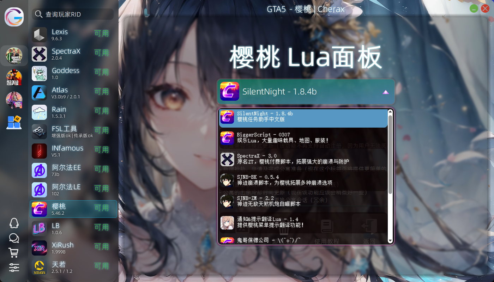
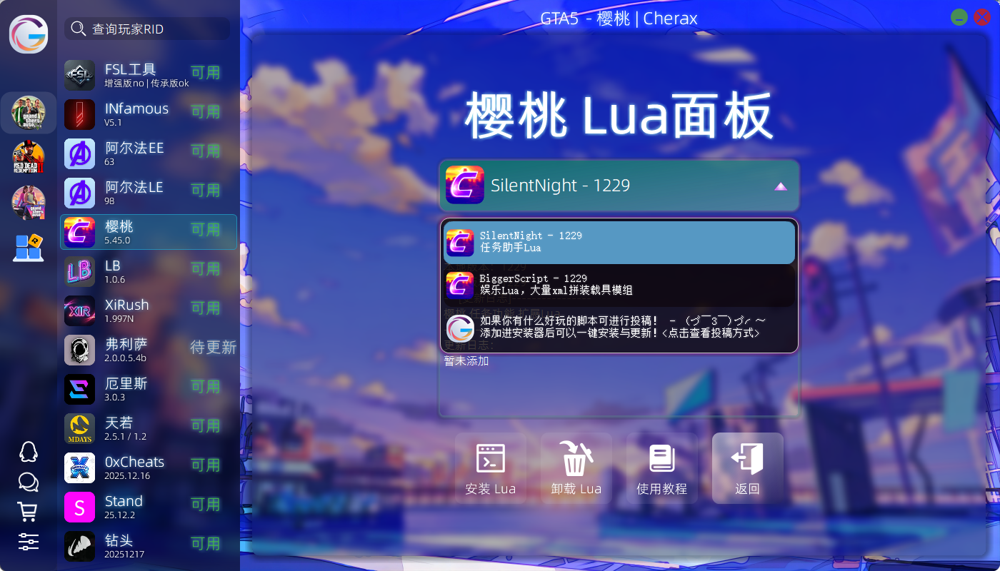
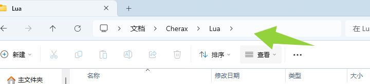
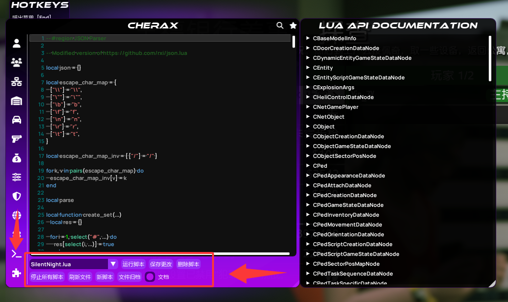
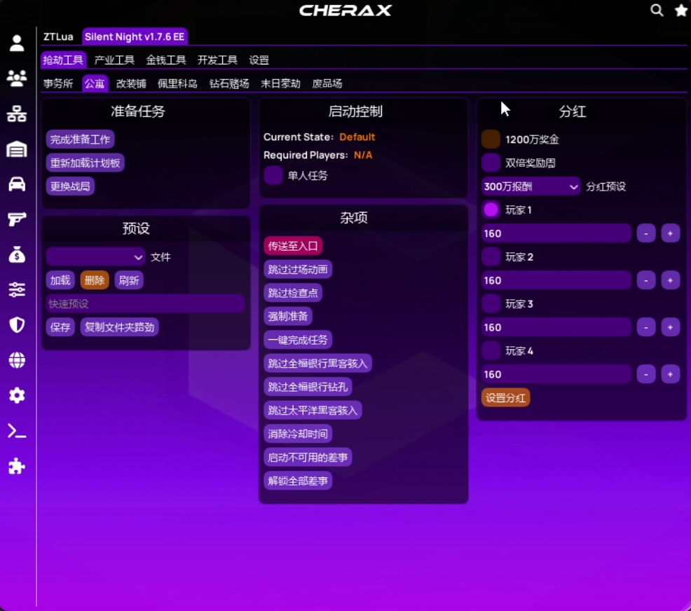
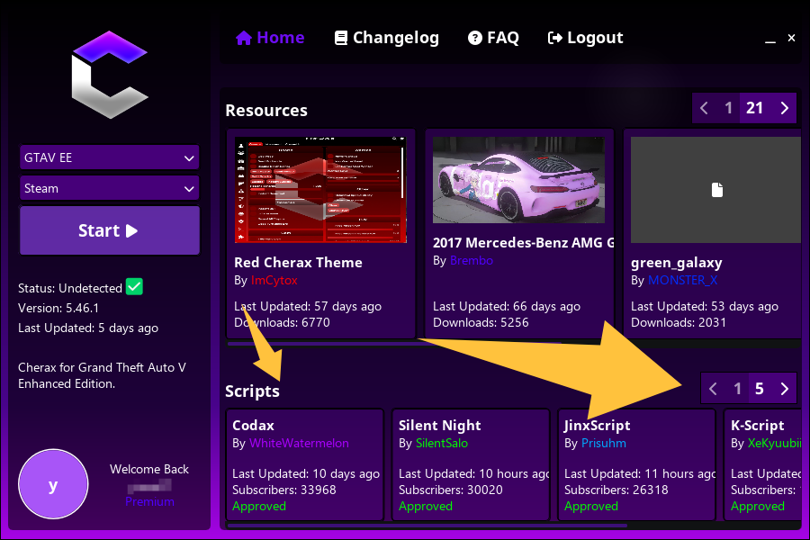
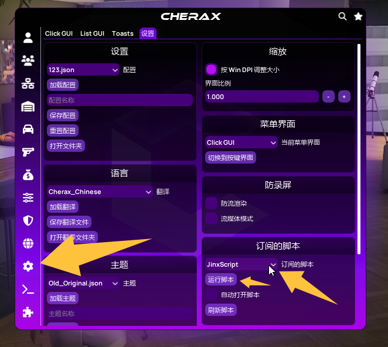
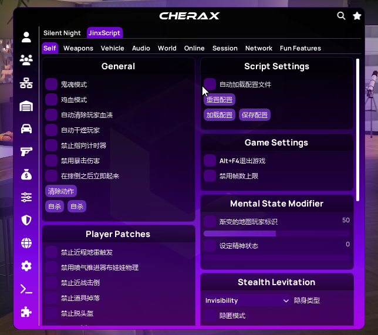

GTA5-侠盗猎车手V教程Cherax 樱桃Cherax Lua 加载教程免费Lua加载教程本页总览Cherax免费Lua教程 Cherax lua详细使用教程与图片演示 本地Lua 下载安装教程 使用银色安装器安装 （推荐）手动安装推荐使用银色安装器使用 银色安装器 Cherax Lua面板 一键安装收录众多有趣的实用的Lua脚本 存放路径打开菜单目录将下载好的 .lua 脚本文件解压至该目录： 游戏内操作 如果没有文件点一下刷新文件   订阅Lua 在樱桃官网或者注入器的注入界面都可以 里面也有很多，只是有的没有汉化，或者汉化不完整。  游戏内操作 如果你想载入订阅lua，你需要打开菜单，如图操作  如果没有显示你所订阅的lua，点击刷新即可。  加载成功后同样在脚本内容里使用，也有的会有独立菜单界面，会有提示